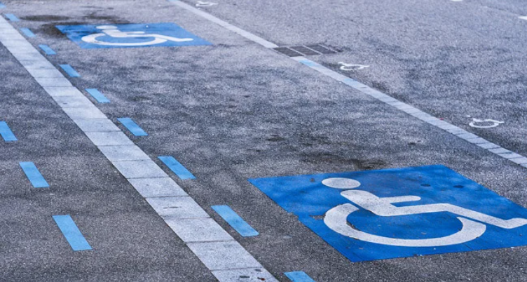
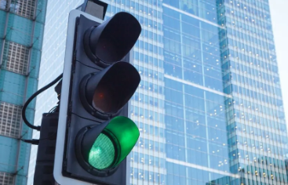
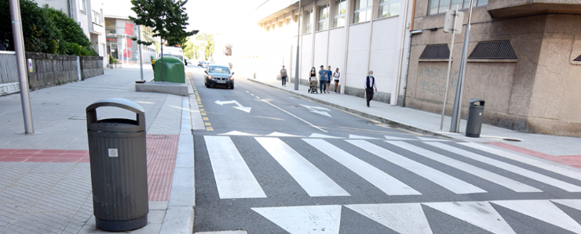

Propostes de millora
Clica sobre cada pestanya per veure la descripció o exemple visual
SENYALITZACIÓ I PASSOS ACCESSIBLES
Instal·lació de mobiliari accessible per a persones amb discapacitat, així com passos de vianants amb paviment especial i relleu per facilitar l’orientació de persones amb discapacitat visual.

Exemple de paviment podotàctil accessible
SEMÀFORS INTEL·LIGENTS
Instal·lació de semàfors with sensors de moviment que ampliïn automàticament el temps de pas per a persones grans o amb mobilitat reduïda. Incorporació de senyals audibles amb volum regulable i vibració per facilitar el creuament a persones amb discapacitat auditiva.

Semàfor amb sensors de moviment
AMPLIACIÓ DE VORERES
En alguns trams, les voreres són massa estretes o tenen obstacles. Proposem ampliar-les i eliminar-ne els elements innecessaris per garantir un pas segur i còmode per a tothom, especialment persones amb mobilitat reduïda i infants.

Vorera ampliada i lliure d'obstacles
APARCAMENTS ADAPTATS
Places ampliades per a persones amb discapacitat prop dels equipaments principals.

Places d’aparcament ampliades per a vehicles, bicicletes adaptades i patinets elèctrics, amb punts de càrrega i suports estabilitzadors. També es preveu la instal·lació d'il·luminació intel·ligent amb sensors de moviment per millorar la seguretat nocturna, aixi com una opció de reserva via app per garantir accessibilitat prioritària.